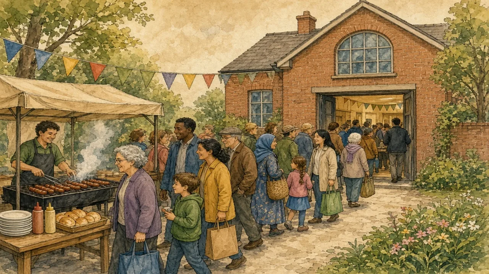

In Australia, not voting can mean a fine. In the USA, millions of people stay at home. Which is better for democracy?
Turnout and the duty to vote · Lesson 5 of 8
🌍 Politics map · ← Politics Around the World · ← Should Everyone Vote on Everything? · Are the Nordics Socialist? →

Each new word is hidden in a sentence. Read it aloud and say what you think the bold word means from the rest of the sentence — then reveal it and see how close you were.
Read each part. After it, there's a quick comprehension check (try the questions from memory first), then one thing to discuss.
Voting in federal elections has been compulsory in Australia since 1924. Voters who do not vote and have no valid reason receive a letter and can be fined a small amount. Turnout is usually around ninety percent. Elections are held on Saturdays, and many polling places run sausage sizzles to raise money, a tradition that Australians jokingly call the “democracy sausage”.
1. Since when has voting been compulsory in Australia?
2. What is the “democracy sausage”?
1. Since 1924.
2. A sausage sold at polling places, which has become a friendly voting tradition.
In the USA, voting is voluntary, and in most states voters must register first. Turnout varies a lot. In the 2020 presidential election it was about two thirds of eligible voters, the highest in over a century, but in many local and midterm elections it is much lower. Supporters of voluntary voting say that no one should be forced to take part. Critics say that low turnout gives more weight to those who do vote.
1. How high was US turnout in 2020?
2. What do critics of voluntary voting say?
1. About two thirds of eligible voters.
2. That low turnout gives more weight to those who do vote.
Several countries mix compulsion with exceptions. In Brazil, voting is compulsory for adults aged 18 to 70, but optional for those aged 16 to 17 and over 70. In Mexico, voting is a legal duty, but there is almost no penalty, so many people simply stay at home. In South Africa, voting is not compulsory, but the long queues of 1994, when the first all-race election took place, became a symbol of how much voting could mean.
1. Who is not required to vote in Brazil?
2. Why is Mexico's rule weak in practice?
1. People aged 16 to 17 and over 70.
2. There is almost no penalty for not voting.
A stereotype and the reality rarely match. This lesson's grammar gives you the structure to describe the difference.
Complete each sentence about Should Voting Be Compulsory?.
1. If you live in Australia, you vote: it's the law. (must / needn't / might)
2. In most US states you register before you vote. (have to / don't have to / mustn't)
3. Australians who do not vote and have no good reason expect a letter and a small fine. (can / needn't / mustn't)
1. must
2. have to
3. can
1. Some people think voting be compulsory. (should / mustn't / needn't)
2. You leave the ballot paper blank; some people do. (can / must / mustn't)
3. You better check the opening hours before you go. (had / would / were)
1. should
2. can
3. had
Hold on to this — you'll need it in the Speak tab.
Behind the question lies a disagreement about what voting is. Some people see it as a personal right, like free speech: you may use it or not. Others see it as a shared duty, like jury service: a community works better when everyone takes part. Neither side denies that people should be encouraged to vote; they differ on whether the state should require it.
This is the heart of the lesson — do all of it out loud. The timer is there to keep you going: fill the time with detail rather than escaping it.
Explain how three countries treat voting, as if to a friend who thinks voting is a free choice everywhere. Move through the arc: Australia's fine → voluntary voting in the USA → Brazil and Mexico → South Africa's queues.
Use today's grammar at least three times, and work in at least five key words (compulsory, fine, turnout, polling station, eligible, duty, abstain, register).
“Voting should be compulsory.” Discuss.
Tell a story from your own world — work, family, the news — that connects to this topic. Stuck for an idea? Pick one of these and run with it:
🌍 Politics map · ← Politics Around the World · ← Should Everyone Vote on Everything? · Are the Nordics Socialist? →